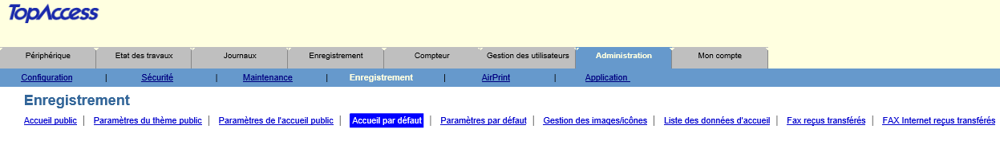
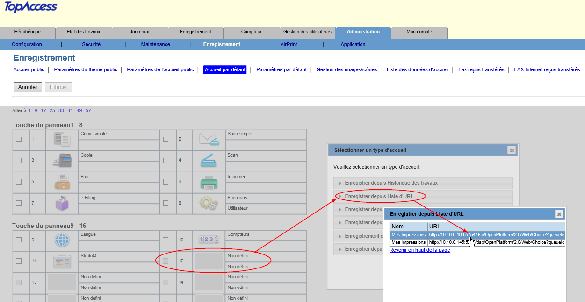
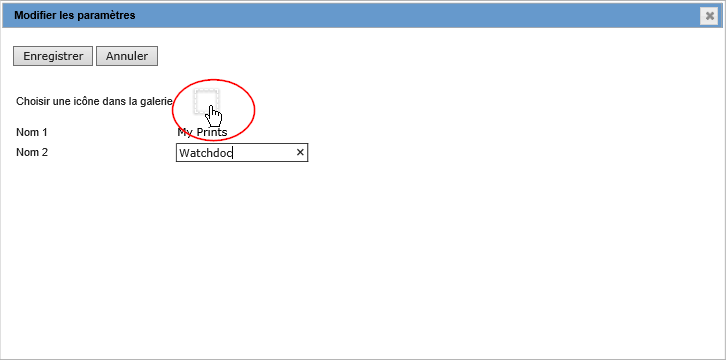
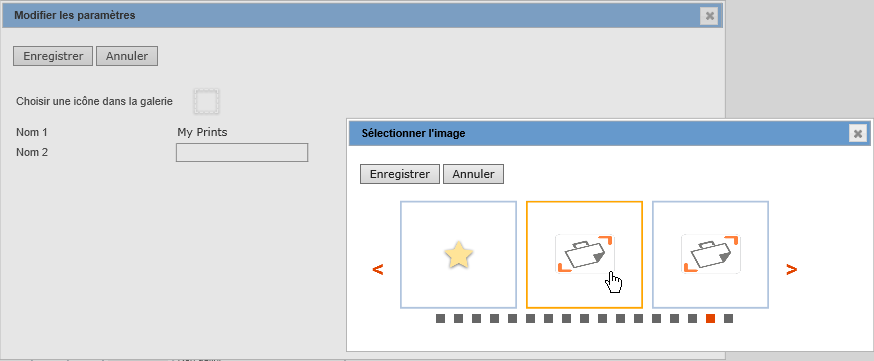
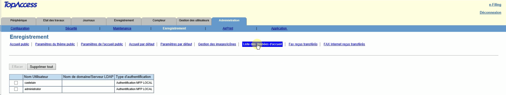
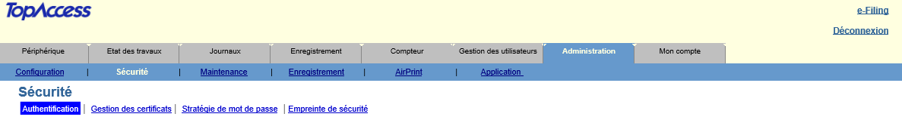
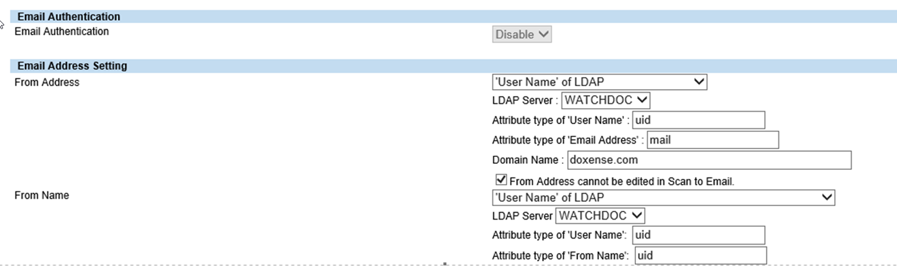
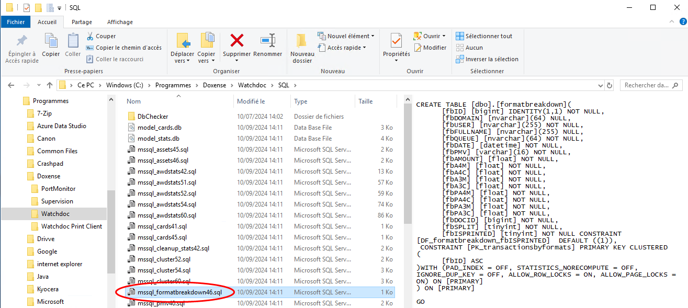
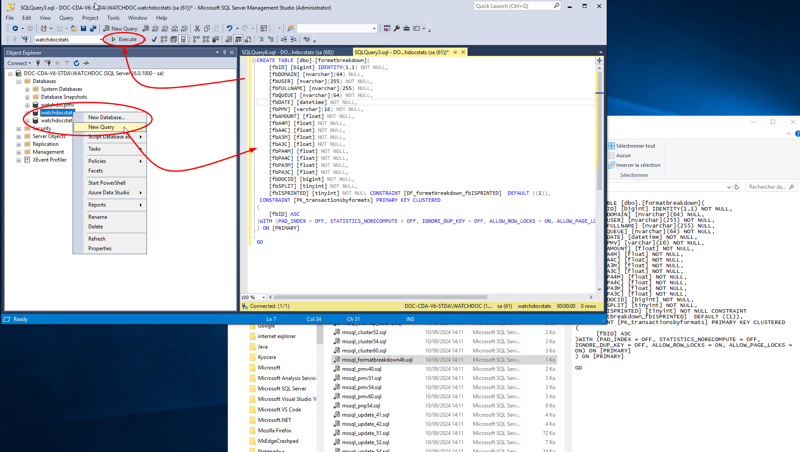
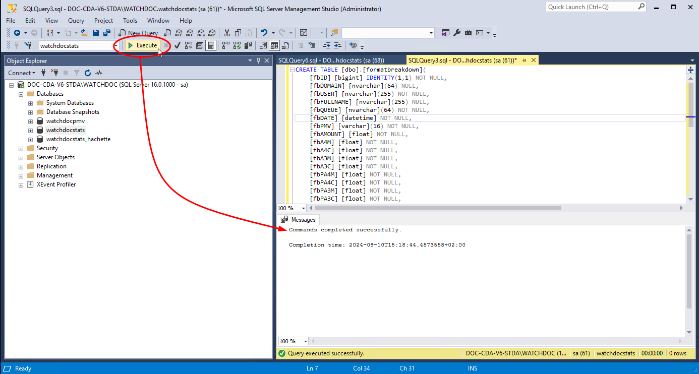

WES Toshiba - Finaliser l'installation du WES
Principe
Après avoir procédé à l'installation du WES sur le périphérique, il convient d'en compléter la configuration depuis l'interface d'administration du périphérique pour :
-
ajouter le bouton d'accès à Watchdoc depuis l'écran du périphérique ;
-
configurer la fonction ScanToMail ;
-
activer les quotas
Personnaliser le bouton d'accès à Watchdoc
-
Depuis l'interface web du périphérique, accédez à l'interface de gestion des boutons en cliquant sur Administration > Enregistrement > Accueil par défaut :

-
Cliquez sur l'une des touches "Non définie" ;
-
Dans la fenêtre Sélectionner un type d'accueil, cliquez sur Enregistrer depuis Liste d'URL, puis sur le lien URL correspondant à Mes Impressions ;

-
Dans la fenêtre Modifier les paramètres, saisissez "Watchdoc" dans le champ Nom2 ;
-
cliquez sur le bouton Choisir une icône dans la galerie ;

-
Dans la fenêtre Sélectionner, parcourez les images figurant dans la liste et sélectionnez l'icone correspondant à Watchdoc
-
puis cliquez sur Choisir une icône dans la galerie ;

-
Cliquez sur les boutons Enregistrer des interfaces successives pour valider le choix du bouton à afficher dans le périphérique.
-
Vérifiez sur l'écran du périphérique que le bouton Watchdoc sélectionné apparaît bien dans le menu et renvoie l'utilisateur à l'interface web de gestion de ses impressions.
-
Finalisez le paramétrage du bouton en supprimant les profils utilisateurs existants :
-
depuis l'interface web du périphérique, accédez à l'interface de gestion des profils utilisateurs en cliquant sur Administration > Enregistrement > Liste des données d'accueil ;
-
cliquez sur le bouton Supprimer tout situé au-dessus de la liste et confirmez la suppression de tous les profils utilisateurs existants.

-
èCette opération rend effectif l'affichage de l'icone Watchdoc® sur l'écran du périphérique.
Paramétrer la fonction ScanToMail
-
Depuis l'interface web du périphérique, accédez à l'interface de gestion de la fonction en cliquant sur Administration > Sécurité > Authentification > Section Configuration de l'adresse E-mail :

-
Dans la section Configuration de l'adresse E-mail, complétez les champs :
-
Depuis le nom : sélectionnez "Nom d'utilisateur du LDAP" ;
-
Paramètre de restriction pour la destination des E-mails : sélectionnez le choix A.

-
Activer les quotas
Principe
Pour enregistrer les données relatives aux quotas appliqués sur les WES, il est nécessaire de créer une table SQL spécifique à la gestion de ces quotas.Cette table n’est pas créée par défaut lors de l’installation.
Le script de création est fourni dans le dossier ‘sql’ du package d'installation Watchdoc : mssql_formatbreakdown46.sql

Les informations sont enregistrées dans une table SQL obligatoirement créée dans la base utilisée pour les statistiques (watchdocstats par défaut).
Procédure
-
connectez-vous au serveur SQL en tant qu'administrateur ;
-
ouvrez le fichier mssql_formatbreakdown46.sql de manière à pouvoir en copier le contenu ultérieurement ;
-
ouvrez SQL Server Management Studio ;
-
dans l'interface Connect to Server, saisissez les informations suivantes :
-
le nom du serveur :
-
le type d'authentification, complété du Login / Mot de passe si nécessaire.
-
-
dans l’arborescence de gauche, déployez le niveau Bases de données (Databases)
-
repérez watchdocstats et cliquez droit ;
-
sélectionnez Nouvelle requête (New Query)
-
dans la page de droite, collez le contenu du script mssql_formatbreakdown46.sql ;

-
puis cliquez sur le bouton Exécuter (Execute) ;
-
Un message vous informe du succès de l'exécution du script :

-
accédez au serveur Watchdoc en tant qu'administrateur ;
-
ouvrez le fichier config.xml (par défaut : C:\Program Files\Doxense\Watchdoc\config.xml) avec un éditeur de texte ;
-
dans la section /config/checkout, ajoutez la ligne <use-formatbreakdowntable>true</useformatbreakdowntable>;
-
quittez SQL Server Management Studio et redémarrez le service Watchdoc ;
èvérifiez que l'impression s'exécute bien sur le WES, et que les quotas sont bien pris en compte.